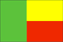
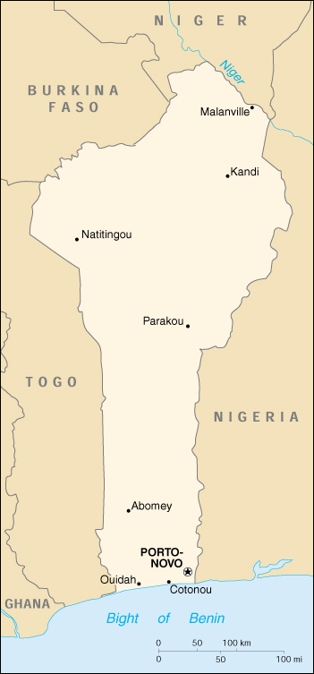

{kind=link}


| Benin |  |
|
|  | |
| Introduction |
Background: Dahomey gained its independence from France in 1960; the name was changed to Benin in 1975. From 1974 to 1989 the country was a socialist state; free elections were reestablished in 1991.
| Geography |
Location: Western Africa, bordering the North Atlantic Ocean, between Nigeria and Togo
Geographic coordinates: 9 30 N, 2 15 E
Map references: Africa
Area:
total:
112,620 sq km
land:
110,620 sq km
water:
2,000 sq km
Area - comparative: slightly smaller than Pennsylvania
Land boundaries:
total:
1,989 km
border countries:
Burkina Faso 306 km, Niger 266 km, Nigeria 773 km, Togo 644 km
Coastline: 121 km
Maritime claims:
territorial sea:
200 nm
Climate: tropical; hot, humid in south; semiarid in north
Terrain: mostly flat to undulating plain; some hills and low mountains
Elevation extremes:
lowest point:
Atlantic Ocean 0 m
highest point:
Mont Sokbaro 658 m
Natural resources: small offshore oil deposits, limestone, marble, timber
Land use:
arable land:
13%
permanent crops:
4%
permanent pastures:
4%
forests and woodland:
31%
other:
48% (1993 est.)
Irrigated land: 100 sq km (1993 est.)
Natural hazards: hot, dry, dusty harmattan wind may affect north in winter
Environment - current issues: recent droughts have severely affected marginal agriculture in north; inadequate supplies of potable water; poaching threatens wildlife populations; deforestation; desertification
Environment - international agreements:
party to:
Biodiversity, Climate Change, Desertification, Endangered Species, Environmental Modification, Hazardous Wastes, Law of the Sea, Nuclear Test Ban, Ozone Layer Protection, Ship Pollution, Wetlands
signed, but not ratified:
none of the selected agreements
Geography - note: no natural harbors
| People |
Population:
6,395,919
note:
estimates for this country explicitly take into account the effects of excess mortality due to AIDS; this can result in lower life expectancy, higher infant mortality and death rates, lower population and growth rates, and changes in the distribution of population by age and sex than would otherwise be expected (July 2000 est.)
Age structure:
0-14 years:
47% (male 1,531,636; female 1,503,552)
15-64 years:
50% (male 1,551,867; female 1,660,845)
65 years and over:
3% (male 63,717; female 84,302) (2000 est.)
Population growth rate: 3.03% (2000 est.)
Birth rate: 44.81 births/1,000 population (2000 est.)
Death rate: 14.51 deaths/1,000 population (2000 est.)
Net migration rate: 0 migrant(s)/1,000 population (2000 est.)
Sex ratio:
at birth:
1.03 male(s)/female
under 15 years:
1.02 male(s)/female
15-64 years:
0.93 male(s)/female
65 years and over:
0.76 male(s)/female
total population:
0.97 male(s)/female (2000 est.)
Infant mortality rate: 90.84 deaths/1,000 live births (2000 est.)
Life expectancy at birth:
total population:
50.18 years
male:
49.24 years
female:
51.16 years (2000 est.)
Total fertility rate: 6.32 children born/woman (2000 est.)
Nationality:
noun:
Beninese (singular and plural)
adjective:
Beninese
Ethnic groups: African 99% (42 ethnic groups, most important being Fon, Adja, Yoruba, Bariba), Europeans 5,500
Religions: indigenous beliefs 70%, Muslim 15%, Christian 15%
Languages: French (official), Fon and Yoruba (most common vernaculars in south), tribal languages (at least six major ones in north)
Literacy:
definition:
age 15 and over can read and write
total population:
37%
male:
48.7%
female:
25.8% (1995 est.)
| Government |
Country name:
conventional long form:
Republic of Benin
conventional short form:
Benin
local long form:
Republique du Benin
local short form:
Benin
former:
Dahomey
Data code: BN
Government type: republic under multiparty democratic rule; dropped Marxism-Leninism December 1989; democratic reforms adopted February 1990; transition to multiparty system completed 4 April 1991
Capital: Porto-Novo is the official capital; Cotonou is the seat of government
Administrative divisions:
6 provinces; Atakora, Atlantique, Borgou, Mono, Oueme, Zou
note:
six additional provinces have been reported but not confirmed; they are Alibori, Collines, Couffo, Donga, Littoral, and Plateau; moreover, the term "province" may have been changed to "department"
Independence: 1 August 1960 (from France)
National holiday: National Day, 1 August (1990)
Constitution: December 1990
Legal system: based on French civil law and customary law; has not accepted compulsory ICJ jurisdiction
Suffrage: 18 years of age; universal
Executive branch:
chief of state:
President Mathieu KEREKOU (since 4 April 1996); note - the president is both the chief of state and head of government
head of government:
President Mathieu KEREKOU (since 4 April 1996); note - the president is both the chief of state and head of government
cabinet:
Council of Ministers appointed by the president
elections:
president elected by popular vote for a five-year term; election last held 18 March 1996 (next to be held NA March 2001)
election results:
Mathieu KEREKOU elected president; percent of vote - Mathieu KEREKOU 52.49%, Nicephore SOGLO 47.51%
Legislative branch:
unicameral National Assembly or Assemblee Nationale (83 seats; members are elected by direct popular vote to serve four-year terms)
elections:
last held 28 March 1999 (next to be held NA March 2003)
election results:
percent of vote by party - NA; seats by party - PRB 27, PRD 11, FARD-ALAFIA 10, PSD 9, MADEPO 6, Alliance Etoile 4, Alliance IPD 4, CAR-DUNYA 3, MERCI 2, other 7
Judicial branch: Constitutional Court or Cour Constitutionnelle, Supreme Court or Cour Supreme, High Court of Justice
Political parties and leaders: African Movement for Democracy and Progress or MADEP [Sefou FAGBOHOUN]; Alliance for Democracy and Progress or ADP [Adekpedjou Sylvain AKINDES]; Alliance of the Social Democratic Party or PSD and the National Union for Solidarity and Progress or UNSP [Bruno AMOUSSOU]; Benin Renaissance Party or PRB [Nicephore SOGLO]; Cameleon Alliance or AC [leader NA]; Car-DUNYA [leader NA]; Communist Party of Benin or PCB [Pascal FANTONDJI, first secretary]; Democratic Renewal Party or PRD [Adrien HOUNGBEDJI]; Front for Renewal and Development or FARD-ALAFIA; Impulse for Progress and Democracy or IPD [Bertin BORNA]; Liberal Democrats' Rally for National Reconstruction-Vivoten or RDL-Vivoten [Severin ADJOVI]; Movement for Citizens' Commitment and Awakening or MERCI [Severin ADJOVI]; New Generation for the Republic or NG [leader NA]; Our Common Cause or NCC [Francois Odjo TANKPINON]; Rally for Democracy and Pan-Africanism or RDP [Dominique HOYMINOU, Dr. Giles Auguste MINONTIN]; The Star Alliance (Alliance E'toile) [leader NA]; Union for National Democracy and Solidarity or UDS [Adamou N'Diaye MAMA]
International organization participation: ACCT, ACP, AfDB, ECA, ECOWAS, Entente, FAO, FZ, G-77, IAEA, IBRD, ICAO, ICFTU, ICRM, IDA, IDB, IFAD, IFC, IFRCS, ILO, IMF, IMO, Intelsat, Interpol, IOC, ISO (subscriber), ITU, MIPONUH, MONUC, NAM, OAU, OIC, OPCW, UN, UNCTAD, UNESCO, UNIDO, UPU, WADB, WADB (regional), WAEMU, WCL, WFTU, WHO, WIPO, WMO, WToO, WTrO
Diplomatic representation in the US:
chief of mission:
Ambassador Lucien Edgar TONOUKOUIN
chancery:
2737 Cathedral Avenue NW, Washington, DC 20008
telephone:
[1] (202) 232-6656
FAX:
[1] (202) 265-1996
Diplomatic representation from the US:
chief of mission:
Ambassador Robert C. FELDER
embassy:
Rue Caporal Bernard Anani, Cotonou
mailing address:
B. P. 2012, Cotonou
telephone:
[229] 30-06-50, 30-05-13, 30-17-92
FAX:
[229] 30-14-39, 30-19-74
Flag description: two equal horizontal bands of yellow (top) and red with a vertical green band on the hoist side
| Economy |
Economy - overview: The economy of Benin remains underdeveloped and dependent on subsistence agriculture, cotton production, and regional trade. Growth in real output has averaged a sound 4% in 1990-95 and 5% in 1996-99. Rapid population growth has offset much of this growth in output. Inflation has subsided over the past three years. Commercial and transport activities, which make up a large part of GDP, are vulnerable to developments in Nigeria, particularly fuel shortages. The Paris Club and bilateral creditors have eased the external debt situation in recent years. The government, still burdened with money-losing state enterprises and a bloated civil service, has been gradually implementing a structural adjustment program since 1991.
GDP: purchasing power parity - $8.1 billion (1999 est.)
GDP - real growth rate: 5% (1999 est.)
GDP - per capita: purchasing power parity - $1,300 (1999 est.)
GDP - composition by sector:
agriculture:
34%
industry:
14%
services:
52% (1997)
Population below poverty line: 33% (1995 est.)
Household income or consumption by percentage share:
lowest 10%:
NA%
highest 10%:
NA%
Inflation rate (consumer prices): 3% (1999 est.)
Labor force: NA
Unemployment rate: NA%
Budget:
revenues:
$299 million
expenditures:
$445 million, including capital expenditures of $14 million (1995 est.)
Industries: textiles, cigarettes; beverages, food; construction materials, petroleum
Industrial production growth rate: NA%
Electricity - production: 6 million kWh (1998)
Electricity - production by source:
fossil fuel:
100%
hydro:
0%
nuclear:
0%
other:
0% (1998)
Electricity - consumption: 276 million kWh (1998)
Electricity - exports: 0 kWh (1998)
Electricity - imports: 270 million kWh (1998)
Agriculture - products: corn, sorghum, cassava (tapioca), yams, beans, rice, cotton, palm oil, peanuts; poultry, livestock
Exports: $396 million (f.o.b., 1999)
Exports - commodities: cotton, crude oil, palm products, cocoa
Exports - partners: Brazil 32%, Libya, Indonesia, Spain (1998)
Imports: $566 million (f.o.b., 1999)
Imports - commodities: foodstuffs, tobacco, petroleum products, capital goods
Imports - partners: France 22%, China 16%, UK, Netherlands (1998)
Debt - external: $1.6 billion (1997 est.)
Economic aid - recipient: $281.2 million (1995)
Currency: 1 Communaute Financiere Africaine franc (CFAF) = 100 centimes
Exchange rates:
CFA francs (CFAF) per US$1 - 647.25 (January 2000), 615.70 (1999), 589.95 (1998), 583.67 (1997), 511.55 (1996), 499.15 (1995)
note:
from 1 January 1999, the CFAF is pegged to the euro at a rate of 655.957 CFA francs per euro
Fiscal year: calendar year
| Communications |
Telephones - main lines in use: 28,000 (1995)
Telephones - mobile cellular: 1,050 (1995)
Telephone system:
domestic:
fair system of open wire, microwave radio relay, and cellular connections
international:
satellite earth station - 1 Intelsat (Atlantic Ocean); submarine cable
Radio broadcast stations: AM 2, FM 9, shortwave 4 (1998)
Radios: 620,000 (1997)
Television broadcast stations: 2 (one privately-owned) (1997)
Televisions: 60,000 (1997)
Internet Service Providers (ISPs): NA
| Transportation |
Railways:
total:
578 km (single track)
narrow gauge:
578 km 1.000-m gauge (1995 est.)
Highways:
total:
6,787 km
paved:
1,357 km (including 10 km of expressways)
unpaved:
5,430 km (1997 est.)
Waterways: navigable along small sections, important only locally
Ports and harbors: Cotonou, Porto-Novo
Merchant marine: none (1999 est.)
Airports: 5 (1999 est.)
Airports - with paved runways:
total:
2
2,438 to 3,047 m:
1
1,524 to 2,437 m:
1 (1999 est.)
Airports - with unpaved runways:
total:
3
1,524 to 2,437 m:
1
914 to 1,523 m:
2 (1999 est.)
| Military |
Military branches: Armed Forces (includes Army, Navy, Air Force), National Gendarmerie
Military manpower - military age: 18 years of age
Military manpower - availability:
males age 15-49:
1,402,566
females age 15-49:
1,445,082
note:
both sexes are liable for military service (2000 est.)
Military manpower - fit for military service:
males age 15-49:
717,289
females age 15-49:
732,196 (2000 est.)
Military manpower - reaching military age annually:
males:
69,065
females:
67,961 (2000 est.)
Military expenditures - dollar figure: $27 million (FY96)
Military expenditures - percent of GDP: 1.2% (FY96)
| Transnational Issues |
Disputes - international: none
Illicit drugs: transshipment point for narcotics associated with Nigerian trafficking organizations and most commonly destined for Western Europe and the US